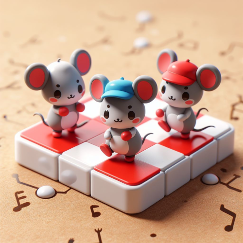

Music generators
Bpm, Rhythm and Melody
Scale and Chords Generators
Chords in Scales
Arpeggio Generator
Rhythm Generator (Graphic)
Drums Generator
Chord Type
Notes
3 dec 2024, 23:40
This project is maintained by
y-bears
. 2024